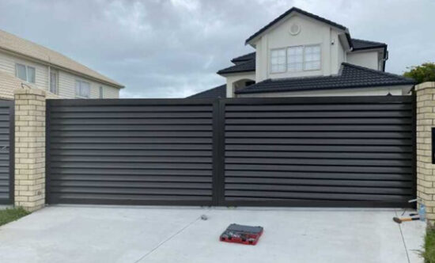
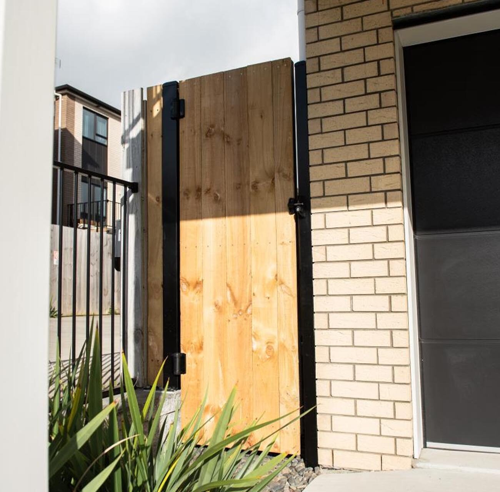
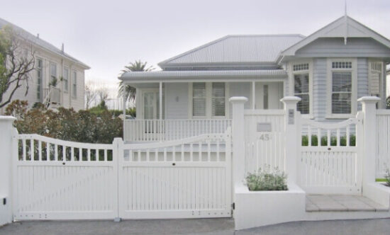
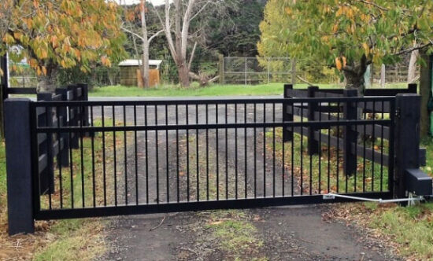
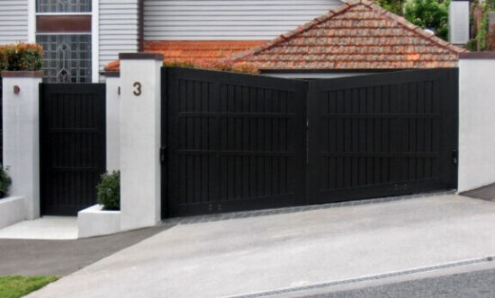
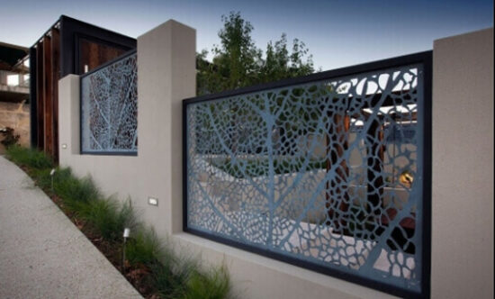
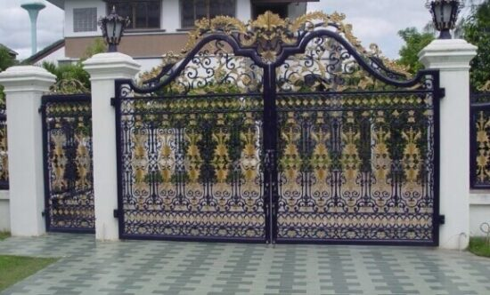

Electric Gates
Automated gate systems for driveways and entries, with dependable motors, remotes and access control.
Read MoreGate Manufacturers Auckland
Locally operated specialists serving Auckland, Waikato and Bay of Plenty.

Welcome to CIL
CIL designs, fabricates and installs gates that suit the way your entry needs to work. The team handles electric gate systems, aluminium and steel fabrication, driveway access, pedestrian gates and custom projects for residential and commercial sites.
Based at 5 greenmount dr, the crew works across Auckland and wider nearby regions with a focus on durable materials, practical automation and a clean finish.
Request a free quoteOur Services

Automated gate systems for driveways and entries, with dependable motors, remotes and access control.
Read More
Practical gate formats matched to your site layout, slope, clearance and daily use.
Read More
Lightweight, corrosion-resistant gates in louvre, slat, tongue and groove or custom profiles.
Read More
Strong fabricated steel gates for high-use entries, security, commercial sites and long spans.
Read More
Frames, posts, brackets and custom metalwork built to fit the project instead of forcing a standard part.
Read More
Tailored designs for unusual openings, feature entries and properties that need a specific finish.
Read MoreWhy Choose Us
The work starts with site conditions, security needs and the look of the property. From there, CIL recommends the right material, gate movement and automation setup so the finished entry feels natural to use.
Knowledge of Auckland driveways, coastal conditions, mixed terrain and busy access points.
Gates can be built to suit your measurements, preferred finish and automation requirements.
Design, manufacture, installation, automation and repairs can be handled by one team.
Our Process
We review the opening, grade, access, clearance and power requirements.
You choose the gate style, finish, hardware and automation options.
The gate is built in aluminium or steel with the correct frame and bracing.
The team installs, tests and leaves the entry ready for everyday operation.
Our Gallery
Testimonials
Fast response, practical advice and a tidy repair on our electric gate. The whole visit was easy.
Roneel ChandClear quote, helpful recommendations and a great finish. I would recommend the team for gate work.
Nilmini PriyadarshaniEfficient service and a result we are pleased with. Clinton and the crew were easy to deal with.
Nick HuangLatest Blog
What to look for in quoting, fabrication quality, installation experience and aftercare.
A quick guide to materials, colours, privacy levels and driveway gate movement.
Convenience, security and safer access for busy driveways and commercial entries.
Need More?
Send a few details and the team can come back with practical next steps for your property.